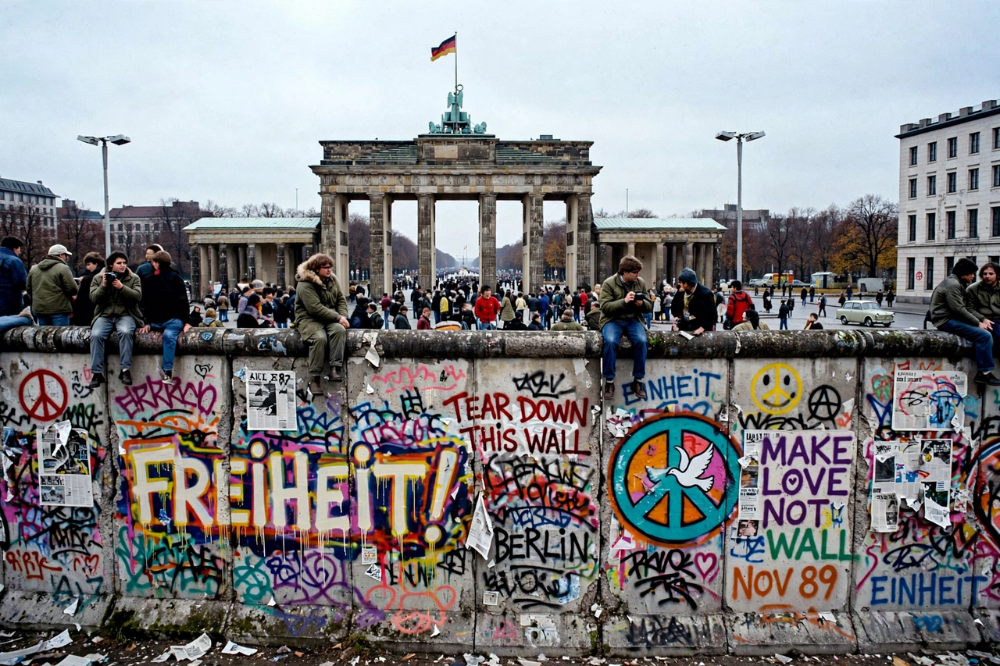

| Type | Border fortification |
|---|---|
| Location | Berlin, Germany |
| Built | 13 August 1961 |
| Demolished | 9 November 1989 – 1994 |
| Length | 155 km (around West Berlin) |
| Deaths at the Wall | At least 140 |
The Berlin Wall (German: Berliner Mauer) was a guarded concrete barrier that encircled West Berlin from 1961 to 1989, separating it from East Berlin and the German Democratic Republic (East Germany). Constructed by the East German government beginning on 13 August 1961, the Wall cut off West Berlin from surrounding East Germany, including East Berlin. It became the most potent physical symbol of the "Iron Curtain" dividing Europe during the Cold War.
After World War II, Germany and Berlin were divided into four occupation zones. The Western zones formed the Federal Republic of Germany (West Germany) in 1949, and the Soviet zone the German Democratic Republic. By 1961 some 2.7 million East Germans — disproportionately young and skilled — had fled west, most through the open sector border in Berlin. To halt the exodus, East Germany, with Soviet approval, sealed the border overnight on 12–13 August 1961, stringing barbed wire that was soon replaced by concrete.
The mature Wall system consisted of two concrete walls separated by a "death strip" of raked sand, floodlights, trip-wire alarms, dog runs and some 300 watchtowers, patrolled by border guards with orders to shoot escapers. At least 140 people were killed at the Berlin Wall between 1961 and 1989, among them Chris Gueffroy, the last person shot, in February 1989; many more died in escape attempts elsewhere along the inner-German border. President John F. Kennedy's 1963 "Ich bin ein Berliner" speech and Ronald Reagan's 1987 "Tear down this wall!" address at the Brandenburg Gate framed the Wall in Western rhetoric.
Amid mass protests and the collapse of communist authority across Eastern Europe, a botched press conference by East German spokesman Günter Schabowski on 9 November 1989 suggested new travel rules took effect "immediately". Crowds massed at checkpoints, and overwhelmed guards opened the crossings that night. Berliners hacked at the Wall with hammers — the Mauerspechte ("wall woodpeckers") — and formal demolition followed. Germany reunified on 3 October 1990.
Surviving stretches include the East Side Gallery, a 1.3 km open-air gallery of murals painted in 1990, and the Berlin Wall Memorial on Bernauer Strasse. Sections and segments of the Wall stand as exhibits worldwide.